Работа в режиме "Дизайнер" MIT App Inventor
Режим "Дизайнер"
Режим "Дизайнер" в MIT App Inventor это один из двух основных режима работы среды разработки, где разрабатывается внешний вид приложения (т.е. дизайн, элементы интерфейса пользователя (поля, кнопки и т.д.) и все косметические действия с приложением).
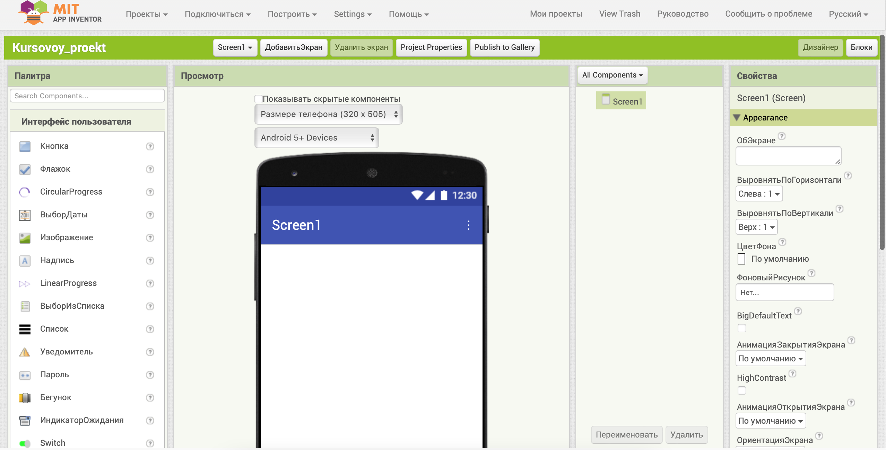Описание режима "Дизайнер"
Режим "Дизайнер" состоит из следующих основных элементов:
- Название текущего проекта
- Палитра: включает наборы (группы) компонент будущего приложения.
- Просмотр: экран вашего приложения.
- Компоненты: список компонентов, которые вы уже используете в своем проекте.
- Свойства: содержит все свойства выделенного компонента из панели "Компоненты
Окно палитры
Окно палитры компонент содержит различные компоненты или объекты, которые пользователь может добавлять на экран. Сама палитра содержит несколько разделов. В каждом из разделов представлены компоненты определённого типа. Около каждой компоненты имеется знак вопроса. При нажатии на знак вопроса появляется всплывающее окно, в котором отображается информация по данному компоненту.
Компонентами называются функциональные элементы приложения, такие как кнопки, изображения, текст, поля для ввода текста, дат, интерфейсы для подключения к разным датчикам вашего Android-устройства — акселерометр, GPS, базы данных и др. Некоторые компоненты являются частью графического дизайна, например, кнопки, а некоторые — невидимы на экране устройства, например, таймер, сенсоры или видеоплейер.
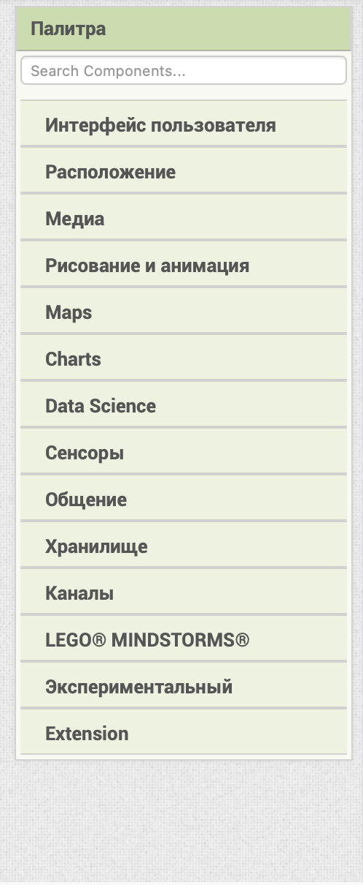Разделы в палитре
Все компоненты, которые можно выбрать в палитре, разделены на несколько групп:
- Интерфейс пользователя: содержит такие компоненты как кнопка, текст, флажок, надпись и остальные объекты которые позволяют приложению взаимодействовать с пользователем. 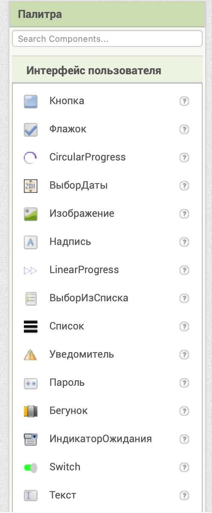
- Расположение: содержит компоненты, отвечающие за макетирование экрана, которые позволяют размещать компоненты интерфейса пользователя горизонтально, вертикально, или в ячейки таблицы. 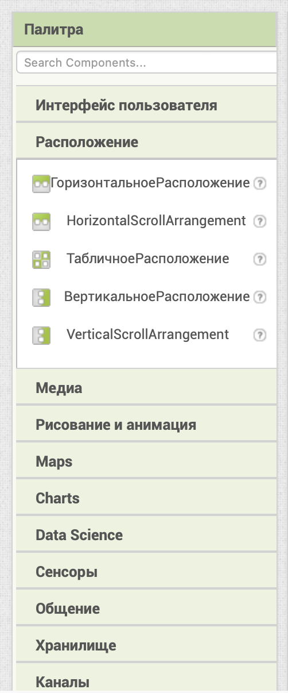
- Медиа: содержит компоненты, позволяющие задействовать в приложении различные медиа инструменты: устройства, микрофоны и наушники, камеру, звуки и аудиофайлы и другое. 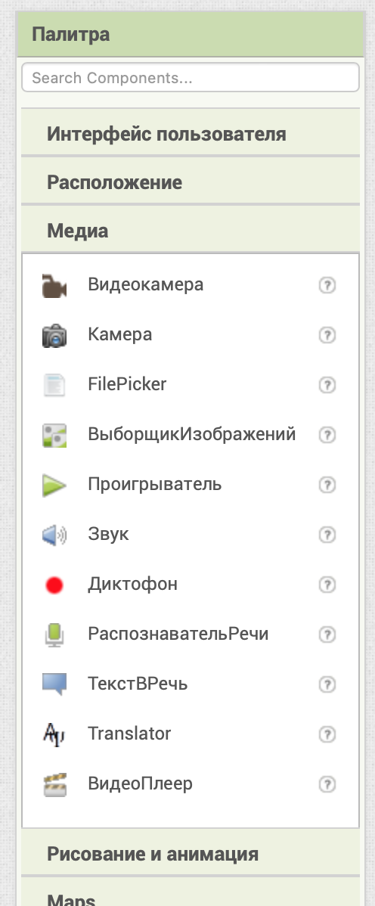
- Рисование и анимация: содержит компоненты, позволяющие рисовать или создавать анимацию в приложении. 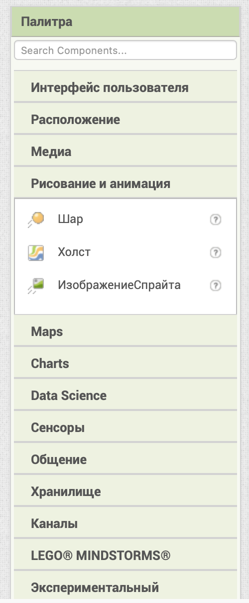
- Maps (карты) : содержит компоненты, которые позволяют добавлять карты, выстраивать маршруты, навигацию, устанавливать маркеры и т.д. 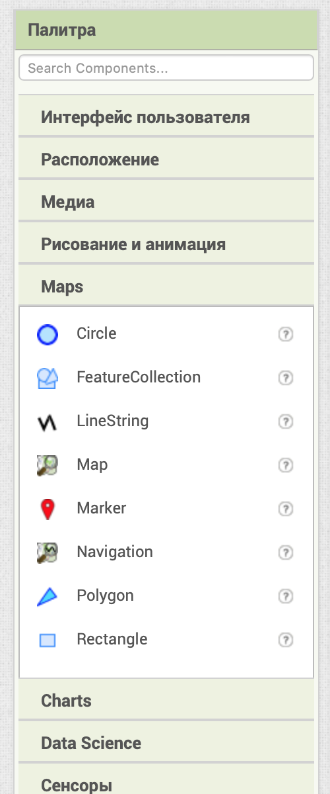
- Сенсоры: содержит невидимые компоненты, позволяющих использовать в приложении данные, полученные с различных сенсоров и датчиков мобильного устройства. 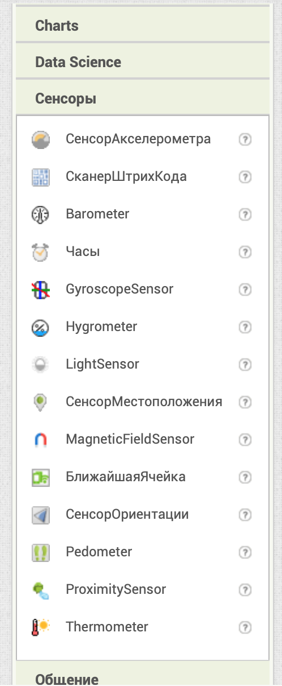
- Общение: содержит компоненты, обеспечивающие связь с социальными сетями. позволяющие делиться информацией, получать доступ к контактам устройства и пр. 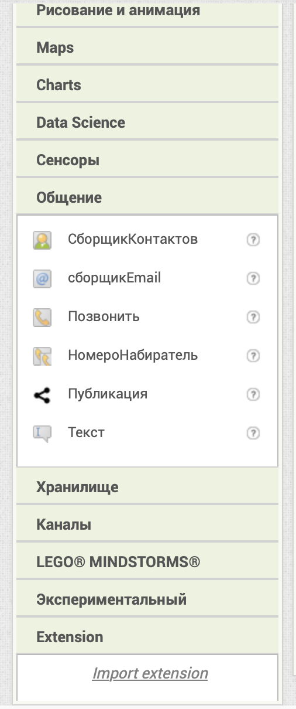
- Хранилище: содержит компоненты, позволяющие передавать значения внутри приложения и сохранять какие - либо данные приложения на внешнем устройстве. 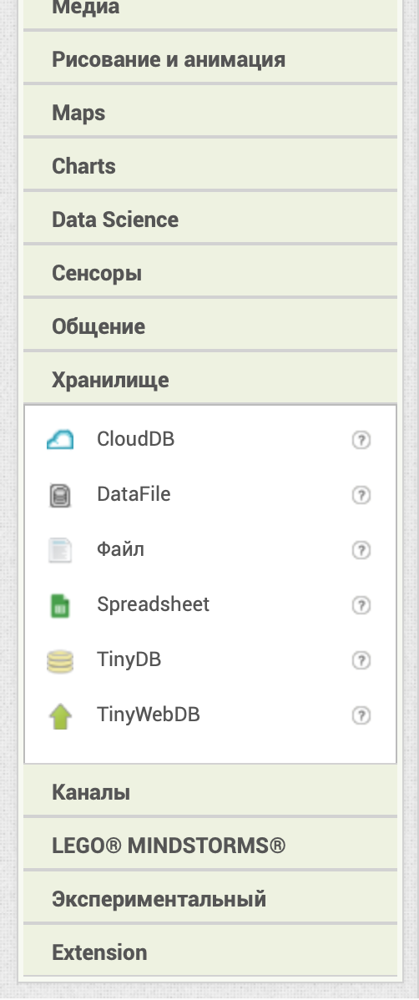
- Каналы: содержит компоненты, отвечающие за подключение к различным беспроводным устройствам. 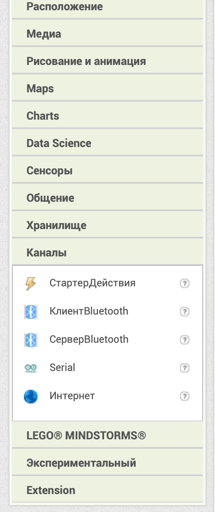
Окно Просмотр
Окно Просмотр - это центральная часть рабочей области, где создаётся и редактируется интерфейс мобильного приложения. Оно представляет собой интерактивный макет экрана, который показывает, как будет выглядеть приложение на устройстве.
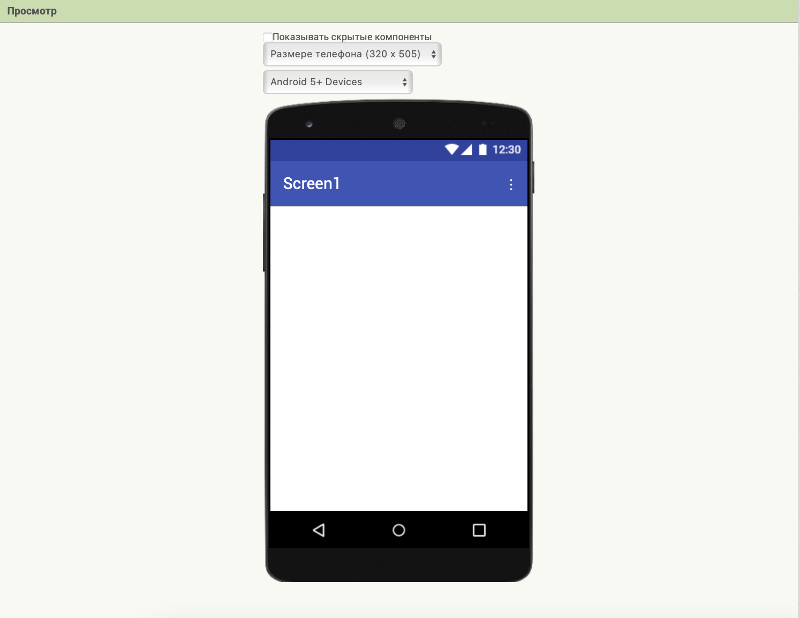Окно Компоненты
Окно «Компоненты» содержит все компоненты, которые используются на экране. Компоненты представлены в упорядоченной иерархической форме. Каждый компонент можно переименовать или удалить.
При именовании компонентов рекомендуется воспользоваться следующим правилом “Имя компонента” = “ Название компонента”+ “Действие/ Функция”, которое он выполняет в приложении: КнопкаНазад, КнопкаДалее, ИзображениеФон и пр. Такое именование компонент позволяет легко ориентироваться при программировании для них действий или событий.
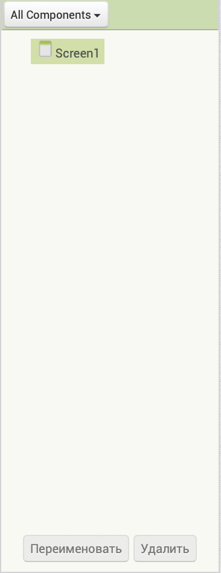Окно Медиа
Окно «Медиа» используется для загрузки картинок, звуков, видео.
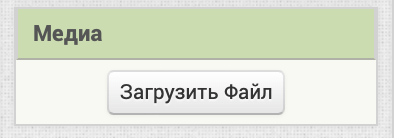При нажатии на кнопку "Загрузить Файл" отобразится диалоговое окно в котором можно выбрать файл для загрузки на сервер MIT App Inventor, который будет можно использовать при разработке мобильного приложения.
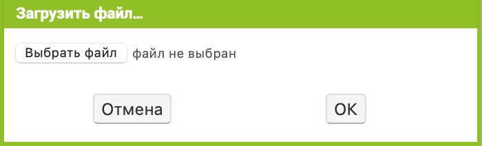При нажатии ЛКМ на мультимедиаэлементы их можно просмотреть, удалить или загрузить на компьютер.
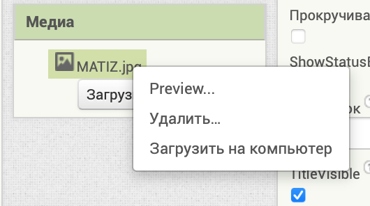Окно Свойства
Окно Свойства позволяет точечно настраивать свойства для каждого из компонентов. Данное окно будет иметь различный вид для различных компонентов. У каждого из компонент палитры обычно имеется свой уникальный набор свойств, хотя некоторые компоненты со сходным функционалом могут иметь почти одинаковый набор свойств.
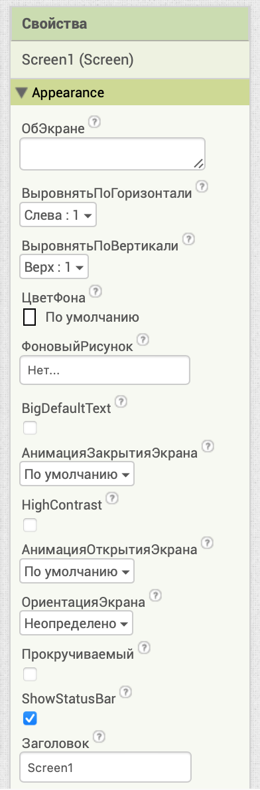Например, у кнопки можно настроить форму кнопки, цвет текста, цвет фона, изображение на кнопке, выравнивание текста, видима или нет кнопка, режимы ширины и высоты, настройки шрифта, текст кнопки.
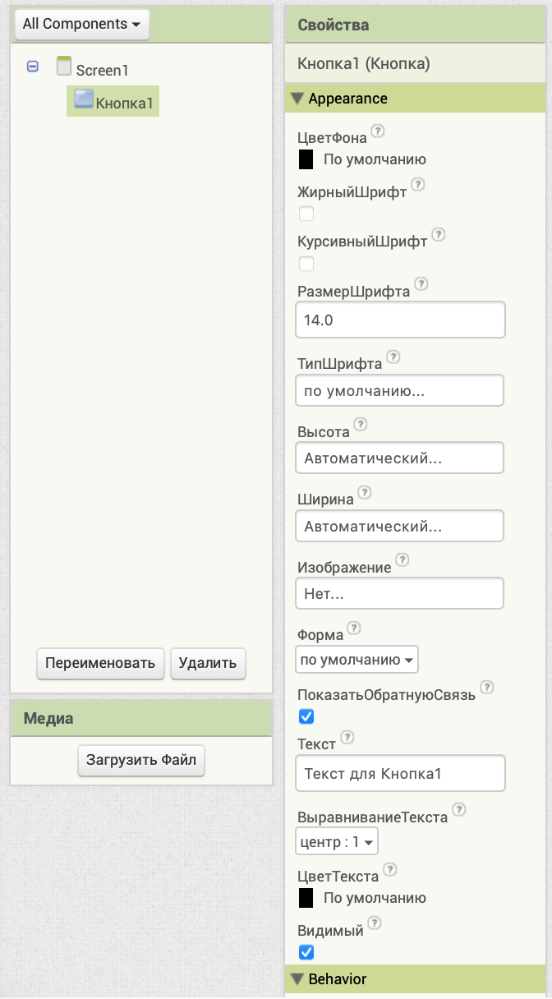